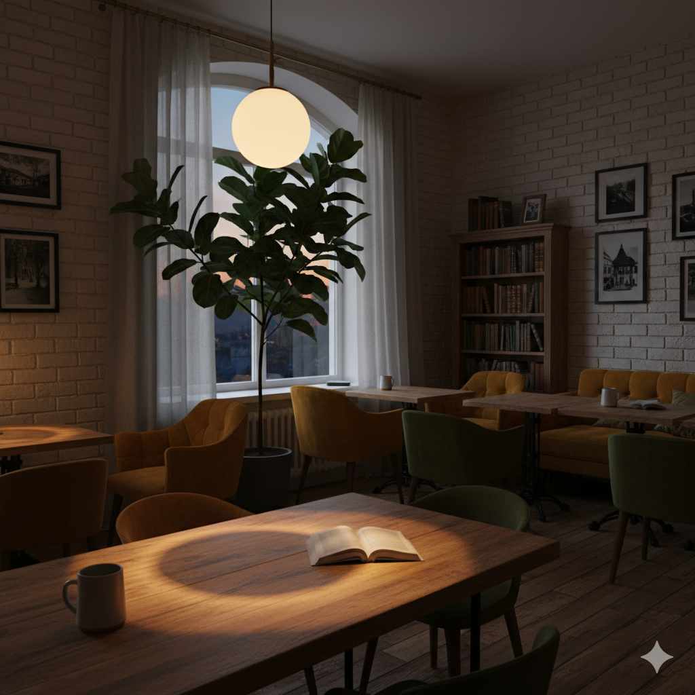
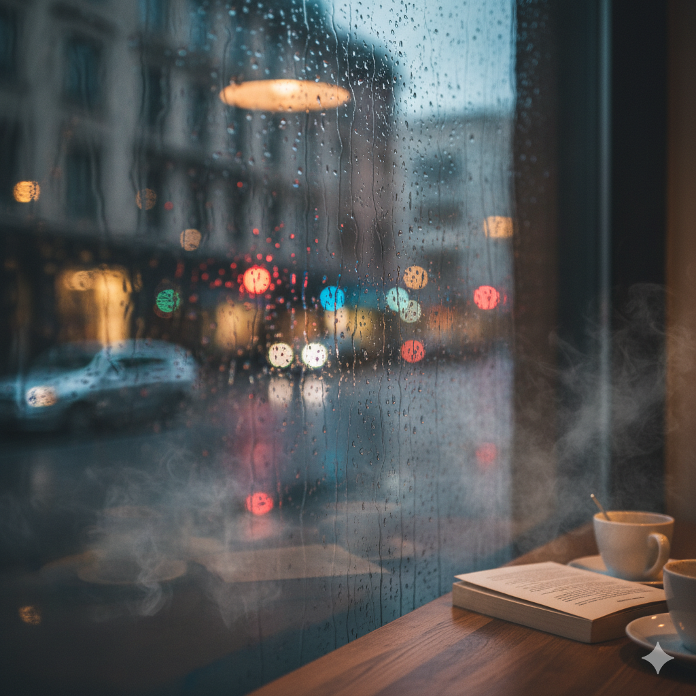

Our Space
The Grey Café is made for the quiet ones — the thinkers, the readers, the people who like taking life a little slower. No rush, no noise, just warmth in the air and time that moves gently.
Every cup here is brewed with intention. Small-batch beans, slow pours, warm light, soft corners. Stay for ten minutes or two hours — no one’s keeping track. This is your pause button.
House Favorites


Inside the Café

